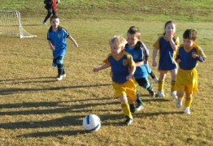
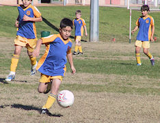
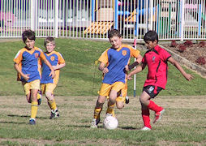
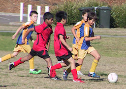
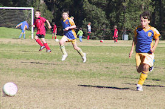

| Match Report - 19 June 2010 |
|
|
|
|
|
|
|
|
|
|
On such a fantastic day we knew we were in for some fantastic soccer and we were
not disappointed. Our boys today put in a great effort despite the grass being
more like a slippery ice rink than a grass oval - there was many spills and
slides but it only added to the fun the boys were having out there.

We had some great runs from Hayden and some fabulous footwork from Jack and a
lot of support from Felix when it was needed, but today this game was all North
Ryde. Our goal kickers Nic, Cooper and Jayden did a fantastic job kicking the
ball thru the net 6 times over the whole game, the poor Macquarie Dragons didn't
stand a chance today.
Another lot of great team work was on display and I think this little team of
Under 6's is one to look out for in the future.
Man of the match (although there were many) went to Cooper today, so well done
Cooper, and well done boys, it was a pleasure to watch.

- Aleisha Cossettini
|
|
|
|
|
|

Whether it was the early morning start or the hangover from their win last start,
the team didn't seem to get out of first gear this week.
Everyone tried hard again and Christian scored his obligatory couple of goals.
Blake's tenacity in defence kept the score from blowing out and earned him the
Player of the Week award.
Alexis, Reilly, Idan and Joshua kept running all game so good effort and
hopefully a better result next week.
- Will
|
|
|
| U7 Red B |
|
North Ryde - Gladesville Ravens
|
|
|
|
It was sunny. We did good passing but the other team were good. The best moment
was when Luke scored a goal [team hug].
- Fletcher Gusse
|
|
|
|
|
|
On the 19th of June North Ryde were playing against Ryde Saints United at our
home ground. Saints United were coming last on the ladder but they only lost
2 - 0 to West Pennant Hills (the top team) so we did not know what we were up
against.
North Ryde won the toss and decided to pick the half, leaving Saints United
with the kick-off. As the game was about to start, everyone found their positions
and got ready. Then the whistle blew. There were a few rough tackles from Saints
United but North Ryde fought back hard. Eli set up a great though ball to Adam
who ran with the ball and kicked it into the goal. The score was 1 - 0 to North
Ryde. A few minutes later Adam took a corner which Shannon managed to get to and
header straight into the goal. That gave North Ryde a 2 - 0 lead. At the end of
the first half Shannon once again dribbled through a few defenders and had a shot
at goal and it went in. North Ryde were up 3 - 0 by the time the whistle blew for
half time.
There had been some brilliant defending by Jack, Tim, Christopher, Tom H and
Patrick, excellent passing and through balls from Tom M, David, Eli and Oscar,
magnificent finishing off by Adam and Shannon, and great goal-keeping by Tim
and Jett.
When the whistle blew for the second half, it was North Ryde's turn to kick off.
Saints United came back strong and North Ryde had to work hard to keep the lead.
David dribbled the ball and passed it to Tom M who finished it off to take the
score to 4 - 0. But Saints United did not give up and they took a shot that Jett
could just not reach and it managed to go into the goal. That made the score
4 - 1. Soon afterwards Adam scored another goal by kicking the ball with his left
foot into the top of the net. That made the score 5 - 1 to North Ryde.
There were only a few minutes left until the end of the game. By that time there
were a few more people joining the crowd on the sideline because of the next game.
The final whistle blew and North Ryde had a 5 - 1 victory. Eli got the Player of
the Match for doing excellent passing and running with the ball.
- David Howard (Player)
|
|
|
|
|
|


The day started wonderfully. It was sunny and warm and we had all of the teams'
15 players present. At kickoff, we immediately went on the attack with Anthony
moving the ball into enemy territory. A throw in by Thomas and big boot from
Harry saw us challenging the Redbacks deep into their half in the early stages
of the game.
We were looking strong and certain to score when one of the Redbacks fastest
players managed an intercept and incredibly was able to take the ball the length
of the field and to our goal where with only daylight between him and our goalie,
was able to successfully shoot a goal 8 min into the first half. We immediately
found ourselves defending a relentless attack by the opposition with two shots
at our goal denied by Peter our goalie and strong defence by Andrhea.

We countered by moving the play back into the Redbacks half with a shot at goal
by Lachlan denied by their keeper. A great team effort set up by Harry, deflection
by Lachlan and shot by Lawrence saw us score our first goal 21 minutes into the
first half, making the score 1-1 where it remained for the rest of that half.

A strong defence foiled initial attempts at our goal early in the second half,
however the opposition could taste a goal and repeated attacks saw them score 3
min into the second half. It was time to get tough with Harry taking the ball deep
into the Redbacks half with an attempt at their goal stopped by their keeper.
Saxon and Sam made a great effort to advance the ball, only to see the opposition
move it back into our half and a shot at our goal denied by strong defence by
Matthew. An immediate follow up shot saw Peter dive to stop the goal.
A fresh set of substitutes saw strong play by Jack attacking the opposition defence
and bringing the play to their goal area. Some broken play saw the ball move up and
down the field with a goal attempt eventually being made by the opposition, only to
be stopped once again by our goalie. Harry immediately countered by taking the ball
all the way to the opposition goal, however strong defence by them saw him shoot
wide. Unfortunately the Redbacks' goalie was injured during the attempt and had to
be retired from the game. Another goal by the Redbacks at the 22 minute mark made
the score 3-1 to them where it remained for the rest of the game.
It was not a bad effort by our team with some of the great attacking we made, not
converted into goals.
- Gary Renouf
|
|
|
|
|
|
A great result for the boys that's catapulted the team into the top 4 for the
first time this season!!
To everyone's credit, this result reflects continued effort at training; the
growing cohesion of the team; and the continued support of the Club through the
willingness of other players (and their parents) to help make up team numbers.
Last weekend's result saw a tremendous team effort with some notable individual
efforts. This included Andrew and Will bagging their first goals for the season.
Andrew's came from an incisive run into the box matched with a clinical finish.
Keep that up Andrew! Will slotted a penalty that would make any Socceroos proud
expertly looping the ball over the keepers head and into the back of the net.
The third goal came from Nick stepping up from the 11s. Whilst these were
goal-scoring highlights, Jackson was the deserving player of the week who ran
himself into the ground providing a strong presence in central mid. Special
thanks go to Declan and Fred also from the 11s who lent a hand, Declan notably
making some great saves in goal in the second half.
- David Hoy
|
|
|
|
|
|
Sorry to take so long to get this report done, especially since it is a report
about a game in which the team put up probably their best performance of the
year. The scoreline of 2 to nil does not reflect the efforts of the boys and
the quality of the performance on the day.
A big thank you to Josh Hallam who came along to take on the coaching role for
the day. Once again the bounce of the ball and at least one off-side refereeing
decision cost us a goal and a possible win. Sam B once again kept goals soundly
and saved a penalty on the day. Well done Sam.
Kenny R and James H played well up front and continually worried the Thornleigh
defence. One cracking shot from James still has the goal post vibrating from
when it cannoned into the cross bar, so close yet so far.
There were many positives to take from this game, strong defence, probing
questioning attacking play with some nice interpassing starting to develop, but
most pleasingly was the solid team effort from everyone involved and the positive
spirit in which you played the game and encouraged and supported each other. Keep
it up with another strong training run under your belts the win will come this
week if you can show the same level of commitment as last week.
- Bill Greer (Manager)
|